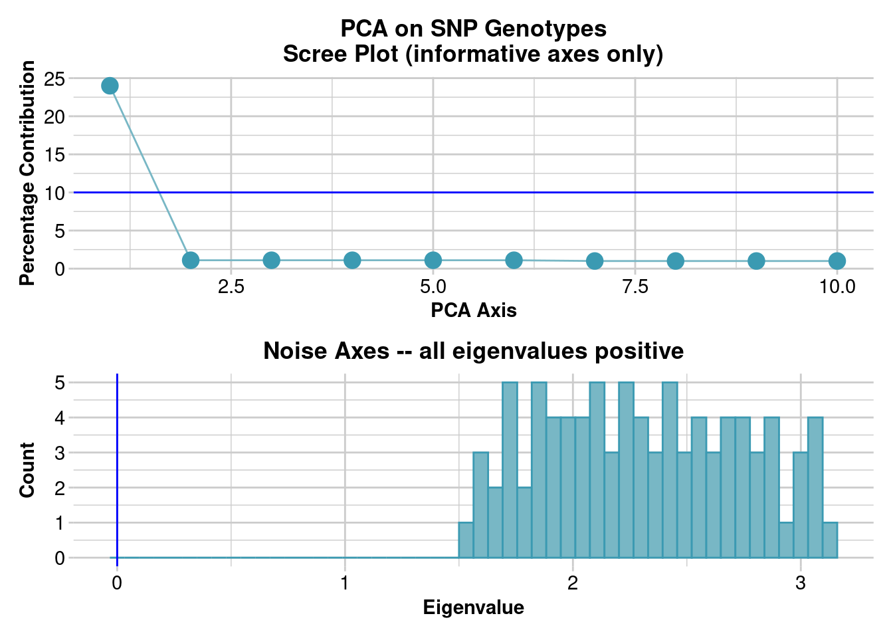
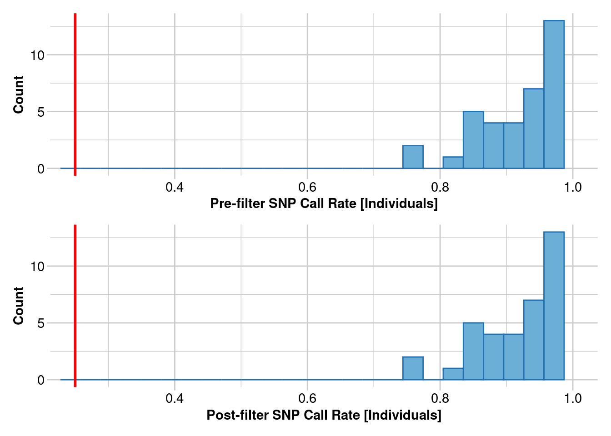
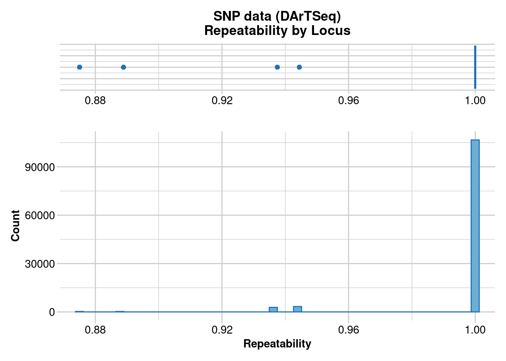
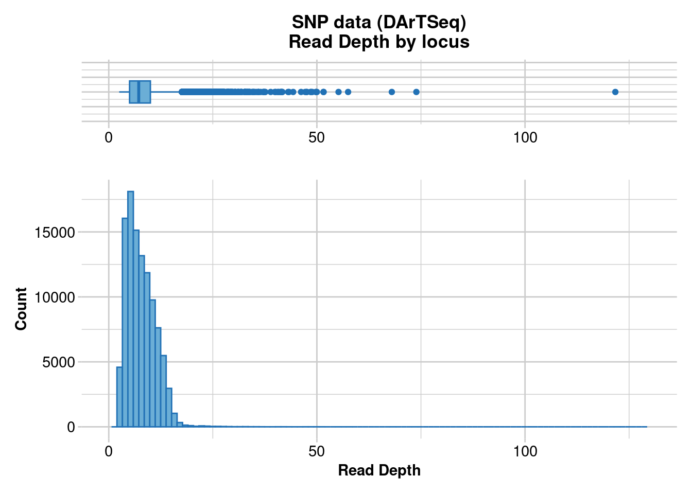
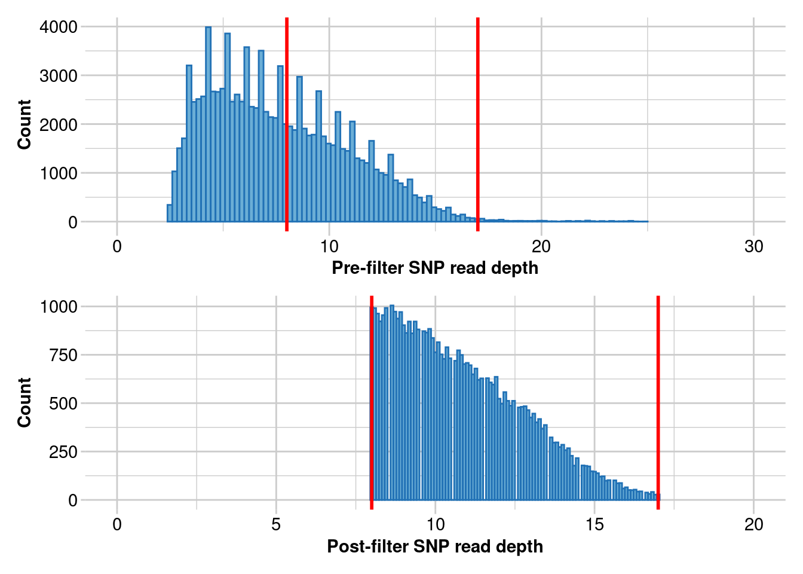
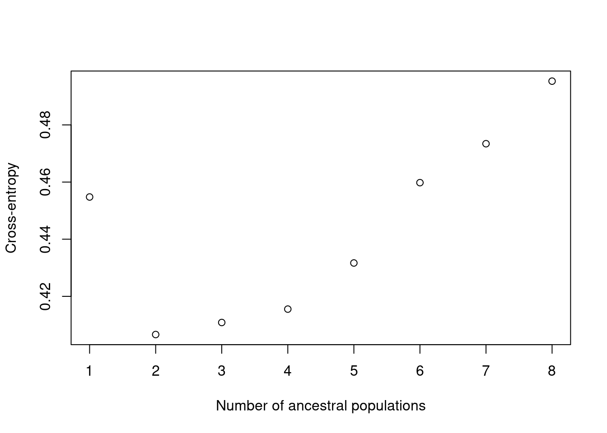
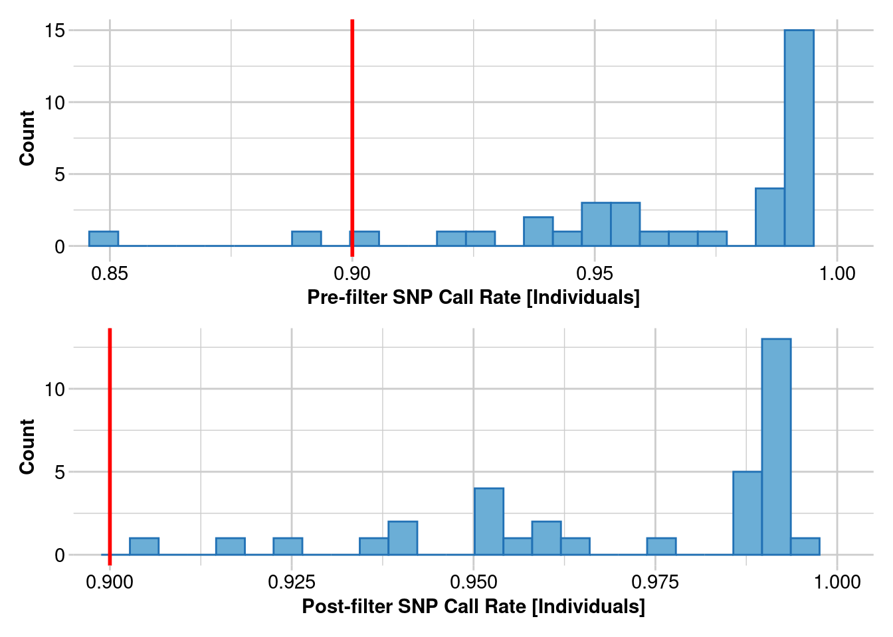

#BiocManager::install("LEA")
#devtools::install_github("tdhock/directlabels")
library(dartRverse)
library(ggplot2)
library(data.table)
library(leaflet.minicharts)
library(LEA)2 Pop Gen In Conservation
Session Presenters
Required packages
make sure you have the packages installed, see Install dartRverse
Introduction
Here is an introductory video on genetic diversity measures that is assumed knowledge for this session.
For more details see Sherwin et al. (2017).
Exercise
Task
 You have been asked to evaluate the ‘genetic health’ of a population at a restoration site, which has been established two years earlier as a results of the drying of a wet land due to urban development. The corporate responsible for the restoration project claims that the area can now sustain a high density population of the species A, which previously only occurred in the forested areas west and east of the previously existing wet land. Species A is a long lived terrestrial animal.
You have been asked to evaluate the ‘genetic health’ of a population at a restoration site, which has been established two years earlier as a results of the drying of a wet land due to urban development. The corporate responsible for the restoration project claims that the area can now sustain a high density population of the species A, which previously only occurred in the forested areas west and east of the previously existing wet land. Species A is a long lived terrestrial animal.
Compute genetic diversity metrics (e.g. \(He\), \(Ho\), \(Fis\)) with the data generated by the 100 samples collected and provide a recommendation on whether the restoration project was successful and whether the studied population is likely to required continued active management in the short term.
Load data
# Load the data
glsim <- gl.load("./data/sess2_glsim.rds")#check the population size and number of populations
table(pop(glsim))
popA
100 #number of loci
nLoc(glsim)[1] 2500Different dynamics, same result
Several descriptive genetic parameters are almost routinely computed, and one would be tempted to interpret them with a standardised approach. For example, low genetic diversity is often considered as an indication that the population size is small. If the inbreeding coefficient (\(Fis\)) is positive, that is often taken as an indication that the population is inbred and potentially at risk of inbreeding depression. However, there are situation where different dynamics can produce the same result. It is not always easy to diagnose these situations and identify the cause of our results, but my recommendation would be to give priority to your understanding of the biology, ecology and history of the populations and species you are working with. If the suggested interpretation do not fit your understanding of the ecology or demographics of the populations you are working with, explore possible alternative explanations. In the example above, a low genetic diversity can also occur because of a severe bottleneck even if the population has then recovered to large numbers.
Recall that \(Fis = (He-Ho)/He\), hence any cause of alteration of HWE can cause an increased/decrease \(Fis\) as well sampling effects. For example, the selective sampling of related individuals (e.g. when sampling individuals within family groups - as often happens with feral pigs/boar - or when you are sampling intensively within the dispersal distance range of few individuals) can cause your samples not to be representative of the population, and while your analysis could indicate inbreeding, this may not be the case at population level. Wahlund effect is also another common cause of increased \(Fis\).
Let’s have a look at an example of what happens if our sampling design caused us to sample selectively related individuals. We are going to use a simulated dataset based on the concept presented in Pacioni et al (2020) where females intensively trapped (using a grid design, ‘G’) within an area that didn’t encompassed multiple home ranges were highly related. ON the contrary, individuals trapped along transect (‘T’) that extended over multiple home ranges were an actual random rapresentation of the population.
Load data
glw <- gl.load("./data/sess2_glDes.rds")
#check the population size and number of populations
table(pop(glw)) # G stands for trapped in a grid, T for transect
#number of loci
nLoc(glw)
glw <- gl.filter.monomorphs(glw, verbose = 5)Relatedness results
Mean relatedness for animals trapped in the grid is 3 times those trapped with a transect. There are also a series of other interesting things that happens: Mean relatedness of animals trapped in the grid is just marginally above the mean expected for first cousins (~0.06). However, more than half of the comparisons were between half sibs or more related individuals:
ibd9DT[, sum(`r(1,2)`>=0.125), by=PDes] # HS or more PDes V1
<char> <int>
1: T 0
2: BW 0
3: G 512ibd9DT[, sum(`r(1,2)`>=0.25), by=PDes] # FS or PO PDes V1
<char> <int>
1: T 0
2: BW 0
3: G 92# Recall that the number of pairwise comparisons within 'G' is
nG <- sum(pop(glw) == "G")
nG*(nG-1)/2[1] 1770Only a limited number of loci are out of HWE after correction for multiple comparisons
hwe <- gl.report.hwe(glw, multi_comp = TRUE)Starting gl.report.hwe
Processing genlight object with SNP dataRegistered S3 methods overwritten by 'ggtern':
method from
grid.draw.ggplot ggplot2
plot.ggplot ggplot2
print.ggplot ggplot2 Analysing each population separately
Starting gl.colors
Selected color type 2c
Completed: gl.colors 
Reporting significant departures from Hardy-Weinberg
Equilibrium
NB: Departures significant at the alpha level of 0.05 are listed
Adjustment of p-values for multiple comparisons vary
with sample size
Population Locus Hom_1 Het Hom_2 N Prob Sig Prob.adj
<char> <char> <int> <int> <int> <num> <num> <char> <num>
G V632 5 51 4 60 6.570168e-08 sig 0.001039145
G V718 3 47 10 60 5.768498e-06 sig 0.045617588
Sig.adj npop
<char> <int>
sig 1
sig 1
Completed: gl.report.hwe But incredibly, because of the het excess, \(Fis\) in ‘G’ is negative suggesting a outbred population!
het <- gl.report.heterozygosity(glw)Starting gl.report.heterozygosity
Processing genlight object with SNP data
Calculating Observed Heterozygosities, averaged across
loci, for each population
Calculating Expected Heterozygosities
Starting gl.colors
Selected color type dis
Completed: gl.colors pop n.Ind n.Loc n.Loc.adj polyLoc monoLoc all_NALoc Ho HoSD
T T 50 992 1 982 10 0 0.332258 0.162559
G G 60 992 1 959 33 0 0.327991 0.198620
HoSE He HeSD HeSE uHe uHeSD uHeSE FIS
T 0.005161 0.329298 0.152419 0.004839 0.332624 0.153958 0.004888 0.001446
G 0.006306 0.294170 0.169669 0.005387 0.296642 0.171094 0.005432 -0.091603
FISSD FISSE
T 0.130990 NA
G 0.140922 NA
Completed: gl.report.heterozygosity
Interpreting results
In our task, when the restoration project took place, two separate populations came in contact, creating an admixture zone. As the species is long-lived there has not been enough mixing and turnover for the two amalgamate. The lack of HWE and increased \(Fis\) is a result of the Wahlund effect.
Exercise data
gl.report.heterozygosity(glsim)Starting gl.report.heterozygosity
Processing genlight object with SNP data
Calculating Observed Heterozygosities, averaged across
loci, for each population
Calculating Expected Heterozygosities
Starting gl.colors
Selected color type dis
Completed: gl.colors pop n.Ind n.Loc n.Loc.adj polyLoc monoLoc all_NALoc Ho HoSD
popA popA 100 2500 1 2500 0 0 0.386004 0.142553
HoSE He HeSD HeSE uHe uHeSD uHeSE FIS
popA 0.002851 0.441149 0.096207 0.001924 0.443366 0.09669 0.001934 0.114365
FISSD FISSE
popA 0.268448 0.005369
Completed: gl.report.heterozygosity pcaglsim <- gl.pcoa(glsim)Starting gl.pcoa
Processing genlight object with SNP data
Performing a PCA, individuals as entities, loci as attributes, SNP genotype as state
Starting gl.colors
Selected color type 2
Completed: gl.colors 
Completed: gl.pcoa gl.pcoa.plot(glPca = pcaglsim, x = glsim)Starting gl.pcoa.plot
Processing an ordination file (glPca)
Processing genlight object with SNP data
Plotting populations in a space defined by the SNPs
Preparing plot .... please wait
Completed: gl.pcoa.plot 
hwe <- gl.report.hwe(glsim, multi_comp = TRUE)Starting gl.report.hwe
Processing genlight object with SNP data
Analysing each population separately
Starting gl.colors
Selected color type 2c
Completed: gl.colors 
Reporting significant departures from Hardy-Weinberg
Equilibrium
NB: Departures significant at the alpha level of 0.05 are listed
Adjustment of p-values for multiple comparisons vary
with sample size
Population Locus Hom_1 Het Hom_2 N Prob Sig Prob.adj
<char> <char> <int> <int> <int> <num> <num> <char> <num>
popA Loc1596 26 65 9 100 9.547440e-04 sig 4.891003e-02
popA Loc2002 52 3 45 100 2.321578e-25 sig 1.675391e-22
popA Loc2003 36 28 36 100 9.291399e-06 sig 5.806272e-04
popA Loc2004 49 14 37 100 1.018918e-13 sig 1.354493e-11
popA Loc2005 54 0 46 100 1.534938e-30 sig 4.605615e-27
---
popA Loc2495 40 22 38 100 1.142487e-08 sig 9.447400e-07
popA Loc2496 40 22 38 100 1.142487e-08 sig 9.447400e-07
popA Loc2498 52 8 40 100 4.208247e-19 sig 9.931298e-17
popA Loc2499 42 21 37 100 3.235604e-09 sig 2.773857e-07
popA Loc2500 41 27 32 100 6.060715e-06 sig 3.881011e-04
Sig.adj npop
<char> <int>
sig 1
sig 1
sig 1
sig 1
sig 1
---
sig 1
sig 1
sig 1
sig 1
sig 1
Completed: gl.report.hwe Assessing Populations: structure and demographic history
Load data and explore
This dataset is to assess population structure and diversity in Uperoleia crassa, from Jaya et al. (2022).
# gl <- dartR::gl.read.dart("Report_DUp20-4995_1_moreOrders_SNP_mapping_2.csv",
# ind.metafile = "Uperoleia_metadata.csv")
load('./data/session_2.RData') # data named glThese are monsoonal tropical frogs, who are very common and abundant. They do evolutionarily and reproductively interesting and weird stuff.
Lets quickly look at our samples and populations.
gl.map.interactive(gl)Starting gl.map.interactive
Processing genlight object with SNP data
Completed: gl.map.interactive We have two populations - the Kimberley (IK) and the Top End (IT)
Clean data
Clean up your dataset to remove the most egregiously bad loci and individuals this set of filtering can be used across analyses,
#Get rid of really poorly sequenced loci
#But don’t cut hard
gl.report.callrate(gl)Starting gl.report.callrate
Processing genlight object with SNP data
Reporting Call Rate by Locus
No. of loci = 227143
No. of individuals = 36
Minimum : 0.222222
1st quartile : 0.611111
Median : 0.777778
Mean : 0.7464089
3r quartile : 0.916667
Maximum : 1
Missing Rate Overall: 0.2536 Completed: gl.report.callrate gl.1 <- gl.filter.callrate(gl, method = "loc", threshold = 0.8)Starting gl.filter.callrate
Processing genlight object with SNP data
Warning: Data may include monomorphic loci in call rate
calculations for filtering
Recalculating Call Rate
Removing loci based on Call Rate, threshold = 0.8 Completed: gl.filter.callrate #Very low filter – this is only to get rid of your really bad individuals
gl.report.callrate(gl.1, method = "ind")Starting gl.report.callrate
Processing genlight object with SNP data
Reporting Call Rate by Individual
No. of loci = 113404
No. of individuals = 36
Minimum : 0.7589944
1st quartile : 0.8751808
Median : 0.9524179
Mean : 0.9159171
3r quartile : 0.9598625
Maximum : 0.9787662
Missing Rate Overall: 0.0841
Listing 2 populations and their average CallRates
Monitor again after filtering
Population CallRate N
1 IK 0.9567 22
2 IT 0.8519 14
Listing 20 individuals with the lowest CallRates
Use this list to see which individuals will be lost on filtering by individual
Set ind.to.list parameter to see more individuals
Individual CallRate
1 Up1041_R138706 0.7589944
2 Up1186_QMJ88804 0.7730856
3 Up1096_R36195 0.8080932
4 Up0969_ABTC29129 0.8429597
5 Up1136_NTMR36228 0.8449878
6 Up0854_ABTC17229 0.8483299
7 Up0276_NTMR35114 0.8558869
8 Up1118_NTMR36173 0.8596699
9 Up1120_R36170 0.8701809
10 Up0767_ABTC12489 0.8768474
11 Up0731_ABTC99709 0.8850834
12 Up0832_ABTC93392 0.8948097
13 Up0769_ABTC12511 0.8980988
14 Up0166_WAMR162490 0.9082308
15 Up1078_R36177 0.9091390
16 Up1269_WAMR164857 0.9188212
17 Up1266_WAMR164844 0.9397640
18 Up1321_WAMR171536 0.9517389
19 WAMR162566 0.9530969
20 Up0083_WAMR113846 0.9537142
)Completed: gl.report.callrate gl.2 <- gl.filter.callrate(gl.1, method = "ind", threshold = 0.25)Starting gl.filter.callrate
Processing genlight object with SNP data
Warning: Data may include monomorphic loci in call rate
calculations for filtering
Recalculating Call Rate
Removing individuals based on Call Rate, threshold = 0.25 
Note: Locus metrics not recalculated
Note: Resultant monomorphic loci not deleted
Completed: gl.filter.callrate #Always run this after removing individuals – removes loci that are no longer variable
gl.3 <- gl.filter.monomorphs(gl.2)Starting gl.filter.monomorphs
Processing genlight object with SNP data
Identifying monomorphic loci
No monomorphic loci to remove
Completed: gl.filter.monomorphs #Get rid of unreliable loci
gl.report.reproducibility(gl.3)Starting gl.report.reproducibility
Processing genlight object with SNP data
Reporting Repeatability by Locus
No. of loci = 113404
No. of individuals = 36
Minimum : 0.875
1st quartile : 1
Median : 1
Mean : 0.9962267
3r quartile : 1
Maximum : 1
Missing Rate Overall: 0.08 
Quantile Threshold Retained Percent Filtered Percent
1 100% 1.000000 106676 94.1 6728 5.9
2 95% 1.000000 106676 94.1 6728 5.9
3 90% 1.000000 106676 94.1 6728 5.9
4 85% 1.000000 106676 94.1 6728 5.9
5 80% 1.000000 106676 94.1 6728 5.9
6 75% 1.000000 106676 94.1 6728 5.9
7 70% 1.000000 106676 94.1 6728 5.9
8 65% 1.000000 106676 94.1 6728 5.9
9 60% 1.000000 106676 94.1 6728 5.9
10 55% 1.000000 106676 94.1 6728 5.9
11 50% 1.000000 106676 94.1 6728 5.9
12 45% 1.000000 106676 94.1 6728 5.9
13 40% 1.000000 106676 94.1 6728 5.9
14 35% 1.000000 106676 94.1 6728 5.9
15 30% 1.000000 106676 94.1 6728 5.9
16 25% 1.000000 106676 94.1 6728 5.9
17 20% 1.000000 106676 94.1 6728 5.9
18 15% 1.000000 106676 94.1 6728 5.9
19 10% 1.000000 106676 94.1 6728 5.9
20 5% 0.944444 110021 97.0 3383 3.0
21 0% 0.875000 113404 100.0 0 0.0
Completed: gl.report.reproducibility gl.4 <- gl.filter.reproducibility(gl.3)Starting gl.filter.reproducibility
Processing genlight object with SNP data
Removing loci with repeatability less than 0.99 
Completed: gl.filter.reproducibility #Get rid of low and super high read depth loci
#do twice so you can zoom in
gl.report.rdepth(gl.4)Starting gl.report.rdepth
Processing genlight object with SNP data
Reporting Read Depth by Locus
No. of loci = 106676
No. of individuals = 36
Minimum : 2.5
1st quartile : 5
Median : 7.2
Mean : 7.741356
3r quartile : 10
Maximum : 121.7
Missing Rate Overall: 0.09 Quantile Threshold Retained Percent Filtered Percent
1 100% 121.7 1 0.0 106675 100.0
2 95% 13.6 5520 5.2 101156 94.8
3 90% 12.4 10872 10.2 95804 89.8
4 85% 11.5 16057 15.1 90619 84.9
5 80% 10.7 21633 20.3 85043 79.7
6 75% 10.0 26932 25.2 79744 74.8
7 70% 9.4 32193 30.2 74483 69.8
8 65% 8.8 37650 35.3 69026 64.7
9 60% 8.2 43461 40.7 63215 59.3
10 55% 7.7 48582 45.5 58094 54.5
11 50% 7.2 53911 50.5 52765 49.5
12 45% 6.7 59668 55.9 47008 44.1
13 40% 6.3 64353 60.3 42323 39.7
14 35% 5.8 70391 66.0 36285 34.0
15 30% 5.4 75457 70.7 31219 29.3
16 25% 5.0 80644 75.6 26032 24.4
17 20% 4.6 86041 80.7 20635 19.3
18 15% 4.2 91353 85.6 15323 14.4
19 10% 3.8 96433 90.4 10243 9.6
20 5% 3.3 102090 95.7 4586 4.3
21 0% 2.5 106676 100.0 0 0.0
Completed: gl.report.rdepth gl.5 <- gl.filter.rdepth(gl.4, lower = 0, upper = 25)Starting gl.filter.rdepth
Processing genlight object with SNP data
Removing loci with rdepth <= 0 and >= 25 
Completed: gl.filter.rdepth gl.clean <- gl.filter.rdepth(gl.5, lower = 8, upper = 17)Starting gl.filter.rdepth
Processing genlight object with SNP data
Removing loci with rdepth <= 8 and >= 17 Completed: gl.filter.rdepth nInd(gl.clean)[1] 36nLoc(gl.clean)[1] 44752#look at the data to see if you see any obvious issues and redo if you do.
plot(gl.clean)
rm(gl.1, gl.2, gl.3, gl.4, gl.5)
gl.clean
This file is now your starting file for other filtering
Filtering
Filtering data for population structure and phylogenetic analyses
Loci on the same fragment and missing data are not well supported in these analyses, as they expect all loci to be independently inherited. This means very very close loci are not going to be split through recombination and should be removed. Structure-like analyses dislike missing data. We are also going to filter harder than normal here just so that we can see a result within the workshop.
gl.report.callrate(gl.clean)gl.1 <- gl.filter.callrate(gl.clean, method = "loc", threshold = 0.98)#Remove minor alleles
#I usually set up the threshold so it is just
# removing singletons to improve computation time
gl.report.maf(gl.1)gl.2 <- gl.filter.maf(gl.1, threshold = 1/(2*nInd(gl.1)))#check that the data looks fairly clean
#this starts to show some obvious population banding
plot(gl.2)#remove secondary SNPs on the same fragment
#Always do this as the last loci filter so that you’ve cut for quality
# before you cut because there are two SNPs
gl.3 <- gl.filter.secondaries(gl.2)
#Filter on individuals. You can usually be a bit flexible at this point.
#individuals look a whole lot better now
#make note of any idnviduals with a low call rate. Keep them in for now
#but if they act weird in the analysis, you may want to consider removing
gl.report.callrate(gl.3, method = "ind")gl.4 <- gl.filter.callrate(gl.3, method = "ind", threshold = .9)#Always run this after removing individuals
gl.structure <- gl.filter.monomorphs(gl.4)
#this is your cleaned dataset for a population structure analysis
plot(gl.structure)nInd(gl.structure)
nLoc(gl.structure)You can write this file out for various analyses that we will not go into here (e.g. gl2structure(x) or gl2faststructure(x))
Run SNMF (LEA)
This is a structure-like analysis called SNMF. This code is not all you would need to publish this result, but it is a good first look. You need to test your parameter settings (alpha and tolerance) in a real analysis.
#takes quite a while to run (about 15 minutes)
#in case you want to run it uncomment the following lines and comment the readRDS line
# LEA requires the genotype style file
gl2faststructure(gl.structure, outfile = "gl_structure.fstr",
outpath = './data/')
struct2geno("./data/gl_structure.fstr", ploidy = 2, FORMAT = 2)
###this hates any loci with all heterozygotes
snmf.Sy.K1_8.10 = snmf("./data/gl_structure.fstr.geno", K = 1:8,
entropy = T, ploidy = 2, project="new", repetitions = 10)plot(snmf.Sy.K1_8.10)
k <- 2 #chose best based on lowest cross entropy in graph
ce = cross.entropy(snmf.Sy.K1_8.10, K = k)
best <- which.min(ce)
par (mfrow = c(1,1))
barplot(t(Q(snmf.Sy.K1_8.10, K = k, run = best)), col = 1:k)#Do a PCoA plot. I hate these but they are also good for first pass visualisation.
pc <- gl.pcoa(gl.structure)Starting gl.pcoa
Processing genlight object with SNP data
Performing a PCA, individuals as entities, loci as attributes, SNP genotype as state
Starting gl.colors
Selected color type 2
Completed: gl.colors Completed: gl.pcoa gl.pcoa.plot(pc, gl.structure)Starting gl.pcoa.plot
Processing an ordination file (glPca)
Processing genlight object with SNP data
Plotting populations in a space defined by the SNPs
Preparing plot .... please wait
Completed: gl.pcoa.plot 
rm(ce, gl.1, gl.2, gl.3, gl.4, snmf.Sy.K1_8.10, best, k, pc)
Exercise
 Have a go at altering various parameters and seeing how this changes your answers.
Have a go at altering various parameters and seeing how this changes your answers.
One thing that regularly changes with MAF filters is the amount of variance explained. Removing more minor alleles increases the variance explained in a PCoA. Think about why that would be the case.
Filtering for Tajima’s D
Now we are going to look at how filtering can affect your understanding of demographic processes that population is undergoing. In this case we are going to look at the metric Tajima’s D. Significant negative values of Tajima’s D are due to an excess of rare alleles and are consistent with range expansion. Significant positive values are associated with population contraction.
The moral of the story here is that rare alleles matter, especially when looking at population demographics! Lets look at how singletons impact our estimations of whether a population is expanding or contracting.
This is a function written to calculate Tajima’s D from SNP data. This code will create the function in your global environment so that you can call it. This function differs from calculations in packages such as heirfstat and popgen because it deals with missing data correctly for SNPs, while those other programs were built for gene alignments.Significance (a P-value) cannot be calculated without a simulation, and we are not doing that here. Please ask me how to do this using Hudson’s ms program if you are interested.
get_tajima_D <- function(x){
require(dartRverse) # possibly not needed for a function in an R package?
# Find allele frequencies (p1 and p2) for every locus in every population
allele_freqs <- dartR::gl.percent.freq(x)
names(allele_freqs)[names(allele_freqs) == "frequency"] <- "p1"
allele_freqs$p1 <- allele_freqs$p1 / 100
allele_freqs$p2 <- 1 - allele_freqs$p1
# Get the names of all the populations
pops <- unique(allele_freqs$popn)
#split each population
allele_freqs_by_pop <- split(allele_freqs, allele_freqs$popn)
# Internal function to calculate pi
calc_pi <- function(allele_freqs) {
n = allele_freqs$nobs * 2 # vector of n values
pi_sqr <- allele_freqs$p1 ^ 2 + allele_freqs$p2 ^ 2
h = (n / (n - 1)) * (1 - pi_sqr) # vector of values of h
sum(h) # return pi, which is the sum of h across loci
}
get_tajima_D_for_one_pop <- function(allele_freqs_by_pop) {
pi <- calc_pi(allele_freqs_by_pop)
# Calculate number of segregating sites, ignoring missing data (missing data will not appear in teh allele freq calcualtions)
#S <- sum(!(allele_freqs_by_pop$p1 == 0 | allele_freqs_by_pop$p1 == 1))
S <- sum(allele_freqs_by_pop$p1 >0 & allele_freqs_by_pop$p1 <1)
if(S == 0) {
warning("No segregating sites")
data.frame(pi = NaN,
S = NaN,
D = NaN,
Pval.normal = NaN,
Pval.beta = NaN)
}
n <- mean(allele_freqs_by_pop$nobs * 2 )
tmp <- 1:(n - 1)
a1 <- sum(1/tmp)
a2 <- sum(1/tmp^2)
b1 <- (n + 1)/(3 * (n - 1))
b2 <- 2 * (n^2 + n + 3)/(9 * n * (n - 1))
c1 <- b1 - 1/a1
c2 <- b2 - (n + 2)/(a1 * n) + a2/a1^2
e1 <- c1/a1
e2 <- c2/(a1^2 + a2)
#calculate D and do beta testing
D <- (pi - S/a1) / sqrt(e1 * S + e2 * S * (S - 1))
Dmin <- (2/n - 1/a1)/sqrt(e2)
Dmax <- ((n/(2*(n - 1))) - 1/a1)/sqrt(e2)
tmp1 <- 1 + Dmin * Dmax
tmp2 <- Dmax - Dmin
a <- -tmp1 * Dmax/tmp2
b <- tmp1 * Dmin/tmp2
data.frame(pi = pi,
S = S,
D = D)
}
output <- do.call("rbind", lapply(allele_freqs_by_pop,
get_tajima_D_for_one_pop))
data.frame(population = rownames(output), output, row.names = NULL)
}We are going to focus on key filters and how they impact estimates
Minor allele frequency (MAF) filtering, which explicitly removes rare alleles
No MAF allele filtering and taking all data as it comes
No MAF filtering but filtering on read depth so we are confident in our rare alleles
1. MAF filtering
We will start with our lightly cleaned data and filter this for the tajima’s calculation.
#This function is written to calculate Tajima's D with a fair amount of missing data
#so we are going to filter lightly here
gl.report.callrate(gl.clean)Starting gl.report.callrate
Processing genlight object with SNP data
Reporting Call Rate by Locus
No. of loci = 44752
No. of individuals = 36
Minimum : 0.805556
1st quartile : 0.888889
Median : 0.944444
Mean : 0.9387004
3r quartile : 1
Maximum : 1
Missing Rate Overall: 0.0613 
Completed: gl.report.callrate gl.1 <- gl.filter.callrate(gl.clean, method = "loc", threshold = 0.9)Starting gl.filter.callrate
Processing genlight object with SNP data
Recalculating Call Rate
Removing loci based on Call Rate, threshold = 0.9 Completed: gl.filter.callrate #In this first round, we are going to actually remove singletons (our rare alleles) to see what happens
gl.report.maf(gl.1)Starting gl.report.maf
Processing genlight object with SNP data
Starting gl.report.maf
Reporting Minor Allele Frequency (MAF) by Locus for population IK
No. of loci = 14958
No. of individuals = 22
Minimum : 0.0227
1st quantile : 0.0227
Median : 0.0455
Mean : 0.09433557
3r quantile : 0.0952
Maximum : 0.5
Missing Rate Overall: 0.01
Reporting Minor Allele Frequency (MAF) by Locus for population IT
No. of loci = 24122
No. of individuals = 14
Minimum : 0.0357
1st quantile : 0.0385
Median : 0.0769
Mean : 0.1268348
3r quantile : 0.1667
Maximum : 0.5
Missing Rate Overall: 0.06
Reporting Minor Allele Frequency (MAF) by Locus OVERALL
No. of loci = 33136
No. of individuals = 36
Minimum : 0.0139
1st quantile : 0.0147
Median : 0.0294
Mean : 0.0765617
3r quantile : 0.0735
Maximum : 0.5
Missing Rate Overall: 0.03 Quantile Threshold Retained Percent Filtered Percent
1 100% 0.5000 78 0.2 33058 99.8
2 95% 0.3611 1673 5.0 31463 95.0
3 90% 0.2353 3319 10.0 29817 90.0
4 85% 0.1471 5038 15.2 28098 84.8
5 80% 0.1000 6719 20.3 26417 79.7
6 75% 0.0735 8393 25.3 24743 74.7
7 70% 0.0588 9954 30.0 23182 70.0
8 65% 0.0455 11650 35.2 21486 64.8
9 60% 0.0417 14178 42.8 18958 57.2
10 55% 0.0303 15410 46.5 17726 53.5
11 50% 0.0294 17008 51.3 16128 48.7
12 45% 0.0286 19008 57.4 14128 42.6
13 40% 0.0278 21794 65.8 11342 34.2
14 35% 0.0278 21794 65.8 11342 34.2
15 30% 0.0152 23200 70.0 9936 30.0
16 25% 0.0147 25222 76.1 7914 23.9
17 20% 0.0143 28259 85.3 4877 14.7
18 15% 0.0143 28259 85.3 4877 14.7
19 10% 0.0139 33136 100.0 0 0.0
20 5% 0.0139 33136 100.0 0 0.0
21 0% 0.0139 33136 100.0 0 0.0
Completed: gl.report.maf nLoc(gl.1)[1] 33136gl.2 <- gl.filter.maf(gl.1, threshold = 0.05)Starting gl.select.colors
Warning: Number of required colors not specified, set to 9
Library: RColorBrewer
Palette: brewer.pal
Showing and returning 2 of 9 colors for library RColorBrewer : palette Blues 
Completed: gl.select.colors
Starting gl.filter.maf
Processing genlight object with SNP data
Removing loci with MAF < 0.05 over all the dataset
and recalculating FreqHoms and FreqHetsCompleted: gl.filter.maf nLoc(gl.2)[1] 11248#check that the data looks fairly clean
#this starts to show some obvious banding which are the two populations
plot(gl.2)#we are also going to remove secondary SNPs on the same fragment in this first round
gl.3 <- gl.filter.secondaries(gl.2)Starting gl.filter.secondaries
Processing genlight object with SNP data
Selecting one SNP per sequence tag at random
Completed: gl.filter.secondaries #Filter on individuals. You can usually be a bit flexible at this point.
#make note of any individuals with a low call rate. Keep them in for now
#but if they act weird in the analysis, you may want to consider removing
gl.report.callrate(gl.3, method = "ind")Starting gl.report.callrate
Processing genlight object with SNP data
Reporting Call Rate by Individual
No. of loci = 10450
No. of individuals = 36
Minimum : 0.8505263
1st quartile : 0.9516029
Median : 0.987512
Mean : 0.9671584
3r quartile : 0.9926794
Maximum : 0.9946411
Missing Rate Overall: 0.0328
Listing 2 populations and their average CallRates
Monitor again after filtering
Population CallRate N
1 IK 0.9885 22
2 IT 0.9337 14
Listing 20 individuals with the lowest CallRates
Use this list to see which individuals will be lost on filtering by individual
Set ind.to.list parameter to see more individuals
Individual CallRate
1 Up1041_R138706 0.8505263
2 Up1186_QMJ88804 0.9044976
3 Up0854_ABTC17229 0.9133014
4 Up1096_R36195 0.9143541
5 Up0969_ABTC29129 0.9342584
6 Up1120_R36170 0.9391388
7 Up0767_ABTC12489 0.9419139
8 Up1118_NTMR36173 0.9460287
9 Up1136_NTMR36228 0.9499522
10 Up0731_ABTC99709 0.9521531
11 Up0832_ABTC93392 0.9524402
12 Up0769_ABTC12511 0.9533014
13 Up0276_NTMR35114 0.9567464
14 Up1269_WAMR164857 0.9597129
15 Up1078_R36177 0.9627751
16 Up0166_WAMR162490 0.9649761
17 Up1266_WAMR164844 0.9771292
18 Up1321_WAMR171536 0.9871770
19 Up0083_WAMR113846 0.9878469
20 Up0183_WAMR162558 0.9881340
)Completed: gl.report.callrate gl.4 <- gl.filter.callrate(gl.3, method = "ind", threshold = .9)Starting gl.filter.callrate
Processing genlight object with SNP data
Recalculating Call Rate
Removing individuals based on Call Rate, threshold = 0.9
Individuals deleted (CallRate <= 0.9 ):
Up1041_R138706[IT],
Note: Locus metrics not recalculated
Note: Resultant monomorphic loci not deleted
Completed: gl.filter.callrate #Always run this after removing individuals
gl.D_withfiltering <- gl.filter.monomorphs(gl.4)Starting gl.filter.monomorphs
Processing genlight object with SNP data
Identifying monomorphic loci
No monomorphic loci to remove
Completed: gl.filter.monomorphs #calculate tajima's D with removing singletons and secondaries
D_w_filtering <- get_tajima_D(gl.D_withfiltering)Registered S3 method overwritten by 'GGally':
method from
+.gg ggplot2Registered S3 method overwritten by 'genetics':
method from
[.haplotype pegasRegistered S3 methods overwritten by 'dartR':
method from
cbind.dartR dartR.base
rbind.dartR dartR.baseStarting ::
Starting dartR
Starting gl.percent.freq
Processing genlight object with SNP data
Starting gl.percent.freq: Calculating allele frequencies for populations
Completed: ::
Completed: dartR
Completed: gl.percent.freq D_w_filtering population pi S D
1 IK 1624.763 6566 0.2637598
2 IT 2855.291 8324 1.1409756rm(gl.1, gl.2, gl.3, gl.4)2. No MAF filtering
Now lets try it where we don’t remove singletons or secondaries
#This function is written to calculate Tajima's D with a fair amount of missing data
#we are going to filter lightly here
gl.report.callrate(gl.clean)Starting gl.report.callrate
Processing genlight object with SNP data
Reporting Call Rate by Locus
No. of loci = 44752
No. of individuals = 36
Minimum : 0.805556
1st quartile : 0.888889
Median : 0.944444
Mean : 0.9387004
3r quartile : 1
Maximum : 1
Missing Rate Overall: 0.0613 Completed: gl.report.callrate gl.1 <- gl.filter.callrate(gl.clean, method = "loc", threshold = 0.9)Starting gl.filter.callrate
Processing genlight object with SNP data
Recalculating Call Rate
Removing loci based on Call Rate, threshold = 0.9 
Completed: gl.filter.callrate #check that the data looks fairly clean
#this starts ot show some obvious population banding
plot(gl.1)
#Filter on individuals. You can usually be a bit flexible at this point.
#make note of any idnviduals with a low call rate. Keep them in for now
#but if they act weird in the analysis, you may want to consider removing
gl.report.callrate(gl.1, method = "ind")Starting gl.report.callrate
Processing genlight object with SNP data
Reporting Call Rate by Individual
No. of loci = 33136
No. of individuals = 36
Minimum : 0.8620232
1st quartile : 0.9536758
Median : 0.9886679
Mean : 0.9684834
3r quartile : 0.9923648
Maximum : 0.9943264
Missing Rate Overall: 0.0315
Listing 2 populations and their average CallRates
Monitor again after filtering
Population CallRate N
1 IK 0.9888 22
2 IT 0.9366 14
Listing 20 individuals with the lowest CallRates
Use this list to see which individuals will be lost on filtering by individual
Set ind.to.list parameter to see more individuals
Individual CallRate
1 Up1041_R138706 0.8620232
2 Up1186_QMJ88804 0.9028549
3 Up1096_R36195 0.9145039
4 Up0854_ABTC17229 0.9209319
5 Up0969_ABTC29129 0.9341803
6 Up1120_R36170 0.9400954
7 Up1118_NTMR36173 0.9462216
8 Up0767_ABTC12489 0.9478211
9 Up0731_ABTC99709 0.9527704
10 Up1136_NTMR36228 0.9539775
11 Up0832_ABTC93392 0.9551545
12 Up0276_NTMR35114 0.9586251
13 Up0769_ABTC12511 0.9594097
14 Up1269_WAMR164857 0.9621861
15 Up1078_R36177 0.9633028
16 Up0166_WAMR162490 0.9667733
17 Up1266_WAMR164844 0.9783317
18 Up1321_WAMR171536 0.9882001
19 Up0083_WAMR113846 0.9891357
20 Up0183_WAMR162558 0.9891960
)Completed: gl.report.callrate gl.2 <- gl.filter.callrate(gl.1, method = "ind", threshold = .9)Starting gl.filter.callrate
Processing genlight object with SNP data
Recalculating Call Rate
Removing individuals based on Call Rate, threshold = 0.9
Individuals deleted (CallRate <= 0.9 ):
Up1041_R138706[IT], Note: Locus metrics not recalculated
Note: Resultant monomorphic loci not deleted
Completed: gl.filter.callrate #Always run this after removing individuals
gl.D_withOutfiltering <- gl.filter.monomorphs(gl.2)Starting gl.filter.monomorphs
Processing genlight object with SNP data
Identifying monomorphic loci
Removing monomorphic loci and loci with all missing
data
Completed: gl.filter.monomorphs rm(gl.1, gl.2)
D_wOUT_filtering <- get_tajima_D(gl.D_withOutfiltering)Starting ::
Starting dartR
Starting gl.percent.freq
Processing genlight object with SNP data
Starting gl.percent.freq: Calculating allele frequencies for populations
Completed: ::
Completed: dartR
Completed: gl.percent.freq 3. No MAF filtering but filtering on Read depth
Now lets try it where we don’t remove singletons or secondaries AND we filter for read depth to remove singletons where we are not confident about their base calls
#This function is written to calculate Tajima's D with a fair amount of missing data
# we are going to filter lightly here
gl.report.callrate(gl.clean)Starting gl.report.callrate
Processing genlight object with SNP data
Reporting Call Rate by Locus
No. of loci = 44752
No. of individuals = 36
Minimum : 0.805556
1st quartile : 0.888889
Median : 0.944444
Mean : 0.9387004
3r quartile : 1
Maximum : 1
Missing Rate Overall: 0.0613 
Completed: gl.report.callrate gl.1 <- gl.filter.callrate(gl.clean, method = "loc", threshold = 0.9)Starting gl.filter.callrate
Processing genlight object with SNP data
Recalculating Call Rate
Removing loci based on Call Rate, threshold = 0.9 
Completed: gl.filter.callrate #check that the data looks fairly clean
#this starts ot show some obvious population banding
plot(gl.1)#filter to loci with a lower read depth, so that we are really confident
#that our base calls are correct
gl.report.rdepth(gl.1)Starting gl.report.rdepth
Processing genlight object with SNP data
Reporting Read Depth by Locus
No. of loci = 33136
No. of individuals = 36
Minimum : 8
1st quartile : 9.3
Median : 10.7
Mean : 10.94332
3r quartile : 12.4
Maximum : 17
Missing Rate Overall: 0.03 Quantile Threshold Retained Percent Filtered Percent
1 100% 17.0 27 0.1 33109 99.9
2 95% 14.7 1707 5.2 31429 94.8
3 90% 13.8 3536 10.7 29600 89.3
4 85% 13.3 5002 15.1 28134 84.9
5 80% 12.8 6811 20.6 26325 79.4
6 75% 12.4 8369 25.3 24767 74.7
7 70% 12.0 10014 30.2 23122 69.8
8 65% 11.6 11913 36.0 21223 64.0
9 60% 11.3 13385 40.4 19751 59.6
10 55% 11.0 14934 45.1 18202 54.9
11 50% 10.7 16641 50.2 16495 49.8
12 45% 10.4 18337 55.3 14799 44.7
13 40% 10.1 19974 60.3 13162 39.7
14 35% 9.8 21780 65.7 11356 34.3
15 30% 9.5 23645 71.4 9491 28.6
16 25% 9.3 24859 75.0 8277 25.0
17 20% 9.0 26704 80.6 6432 19.4
18 15% 8.7 28644 86.4 4492 13.6
19 10% 8.5 29974 90.5 3162 9.5
20 5% 8.2 31834 96.1 1302 3.9
21 0% 8.0 33136 100.0 0 0.0
Completed: gl.report.rdepth gl.2 <- gl.filter.rdepth(gl.1, lower = 12, upper = 17)Starting gl.filter.rdepth
Processing genlight object with SNP data
Removing loci with rdepth <= 12 and >= 17 
Completed: gl.filter.rdepth #Filter on individuals. You can usually be a bit flexible at this point.
#make note of any idnviduals with a low call rate. Keep them in for now
#but if they act weird in the analysis, you may want to consider removing
gl.report.callrate(gl.2, method = "ind")Starting gl.report.callrate
Processing genlight object with SNP data
Reporting Call Rate by Individual
No. of loci = 10014
No. of individuals = 36
Minimum : 0.8722788
1st quartile : 0.9646245
Median : 0.9926103
Mean : 0.9749822
3r quartile : 0.9955063
Maximum : 0.9969043
Missing Rate Overall: 0.025
Listing 2 populations and their average CallRates
Monitor again after filtering
Population CallRate N
1 IK 0.9926 22
2 IT 0.9473 14
Listing 20 individuals with the lowest CallRates
Use this list to see which individuals will be lost on filtering by individual
Set ind.to.list parameter to see more individuals
Individual CallRate
1 Up1041_R138706 0.8722788
2 Up1186_QMJ88804 0.9191132
3 Up1096_R36195 0.9281007
4 Up0854_ABTC17229 0.9320951
5 Up0969_ABTC29129 0.9398842
6 Up1120_R36170 0.9531656
7 Up1118_NTMR36173 0.9573597
8 Up0767_ABTC12489 0.9620531
9 Up0832_ABTC93392 0.9636509
10 Up1078_R36177 0.9649491
11 Up0731_ABTC99709 0.9657480
12 Up0769_ABTC12511 0.9662473
13 Up1136_NTMR36228 0.9678450
14 Up0276_NTMR35114 0.9690433
15 Up1269_WAMR164857 0.9721390
16 Up0166_WAMR162490 0.9740363
17 Up1266_WAMR164844 0.9870182
18 Up1321_WAMR171536 0.9924106
19 WAMR162566 0.9928101
20 Up0183_WAMR162558 0.9928101
)Completed: gl.report.callrate gl.3 <- gl.filter.callrate(gl.2, method = "ind", threshold = .9)Starting gl.filter.callrate
Processing genlight object with SNP data
Recalculating Call Rate
Removing individuals based on Call Rate, threshold = 0.9
Individuals deleted (CallRate <= 0.9 ):
Up1041_R138706[IT], Note: Locus metrics not recalculated
Note: Resultant monomorphic loci not deleted
Completed: gl.filter.callrate #Always run this after removing individuals
gl.D_withOutfilteringRDepth <- gl.filter.monomorphs(gl.3)Starting gl.filter.monomorphs
Processing genlight object with SNP data
Identifying monomorphic loci
Removing monomorphic loci and loci with all missing
data
Completed: gl.filter.monomorphs rm(gl.1, gl.2, gl.3)
#calculate tajima's D with removing singletons and secondaries
D_wOUT_filtering_Rdepth <- get_tajima_D(gl.D_withOutfilteringRDepth)Starting ::
Starting dartR
Starting gl.percent.freq
Processing genlight object with SNP data
Starting gl.percent.freq: Calculating allele frequencies for populations
Completed: ::
Completed: dartR
Completed: gl.percent.freq Results
lets look at all three
D_w_filtering population pi S D
1 IK 1624.763 6566 0.2637598
2 IT 2855.291 8324 1.1409756D_wOUT_filtering population pi S D
1 IK 2191.305 14958 -1.3671682
2 IT 4788.202 22787 -0.8746524D_wOUT_filtering_Rdepth population pi S D
1 IK 674.2647 4643 -1.3871722
2 IT 1494.1162 6981 -0.8153518
Interpreting results
For our Kimberley population, removing minor alleles give the actual wrong answer and suggests the population is contracting. This would have contradicted the rest of the findings of the paper, and been an artifact of the filtering process.
This shows how understanding the population genetic theory for a metric is crucial to useful analyses.
Further Study
Another teaching app in R, covering only Shannon for genes and its change over time, produced by Computer Science and Engineering third-year students: https://evolutionaryecology.shinyapps.io/learningEE
Readings
O’Reilly et al. (2020)
Sherwin (2022)
Sherwin et al. (2017)
Sherwin et al. (2021)
Jaya et al. (2022)